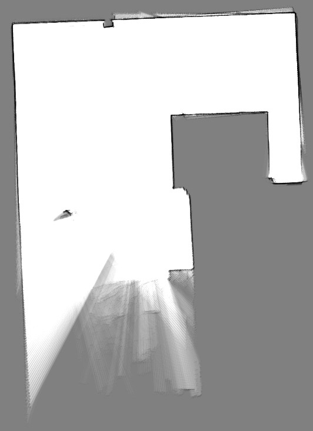

SLAM
Gmapping
将小车上电，等待板载计算机、飞控、移动端RTK、移动端Homer启动完成
打开遥控器
在PC上打开 No Machine 软件，输入 192.168.1.14 远程连接到板载计算机。
注解
板载计算机的固定IP，取决您如何设置 板载计算机IP
输入密码 amov 登录到板载计算机
打开板载计算机桌面的 sh 文件夹后，右键选择 open terminal
输入命令
bash启动Gmapping建图脚本。将遥控器上的档杆SWB拨至中间位置，开始控制R300移动建图
完成建图后，打开一个终端，输入命令
rosrun map_server map_saver -f ~/map保存地图注解
-f参数后面表示地图保存的地址和文件名称，为绝对路径。上面这个指令，将地图保存在 根目录下，并且命名为map。
Cartographer
将小车上电，等待板载计算机、飞控、移动端RTK、移动端Homer启动完成
打开遥控器
在PC上打开 No Machine 软件，输入 192.168.1.14 远程连接到板载计算机。
注解
板载计算机的固定IP，取决您如何设置 板载计算机IP
输入密码 amov 登录到板载计算机
打开板载计算机桌面的 sh 文件夹后，在文件夹内右键选择 open terminal
输入命令
bash r300_cartographer_slam.sh启动Cartographer建图脚本。将遥控器上的档杆SWB拨至中间位置，开始控制R300移动建图
完成建图后，打开桌面的 sh 文件夹，然后在文件夹内右键选择 open terminal。接着，输入命令
bash r300_cartographer_map_save.sh保存地图。注解
该脚本将地图默认保存在 /home/amov/amovcar/src/R300/r300_function/maps/ 下。地图的默认名称为 r300_map
使用脚本保存地图会覆盖上一次的地图文件。如果需要多次仿真建图对比，将每次保存的地图单独放在一个文件夹中。
如果您想将地图保存在其他位置，打开脚本，修改文件路径即可。
Cartographer Demo
R300的功能包里面提供了一个简单的Cartographer纯激光建图的Demo，其bag文件放在 /home/amov/amovcar/src/R300/r300_function/bag/pure_slam.bag
可以通过这个bag，对Cartographer的配置文件进行配置，从而进行建图的调试。打开终端，输入以下命令：
roslaunch r300_function r300_cartographer_demo.launch bag_filename:=/home/amov/amovcar/src/R300/r300_function/bag/pure_slam.bag
当然，您也可以选择播放自己的bag文件，然后通过修改配置文件，查看不同的建图效果
当bag播放完毕，打开终端，输入以下命令：
roscd r300_function/demo_map && bash map_save.sh 保存地图。
注解
该脚本将地图默认保存在 /home/amov/amovcar/src/R300/r300_function/demo_map/ 下。地图的默认名称为 demo_map
使用脚本保存地图会覆盖上一次的地图文件。如果需要多次仿真建图对比，将每次保存的地图单独放在一个文件夹中。
如果您想将地图保存在其他位置，打开脚本，修改文件路径即可。
注解
如果您R300的桌面上sh文件夹内没有相关脚本文件，请更新最新代码。代码地址见 gitee，选择分支为 v1.0-beta
更新代码以后，与Cartographer相关的脚本文件均在
/amovcar/src/R300/r300_function/sh/目录下，您可以将上述相关脚本放置在桌面的sh文件中，方便您的使用
下图为该bag的建图结果
三维建图
将小车上电，等待板载计算机、飞控、移动端RTK、移动端Homer启动完成
打开遥控器
在PC上打开 No Machine 软件，输入 192.168.1.14 远程连接到板载计算机。
注解
板载计算机的固定IP，取决您如何设置 板载计算机IP
输入密码 amov 登录到板载计算机
打开板载计算机桌面的 sh 文件夹后，右键选择 open terminal
输入命令
bash r300_rtabmap.sh启动三维建图脚本。将遥控器上的档杆SWB拨至中间位置，开始控制R300移动建图
完成建图后，打开一个终端，输入命令
rosrun map_server map_saver -f ~/map_name保存地图
小技巧
如果节点启动异常，请确保 相机序列号 设置正确
如果相机序列号正常，仍然存在启动失败的情况，请删除amovcar目录下的 devel 和 build 两个文件夹，然后重新编译整个项目